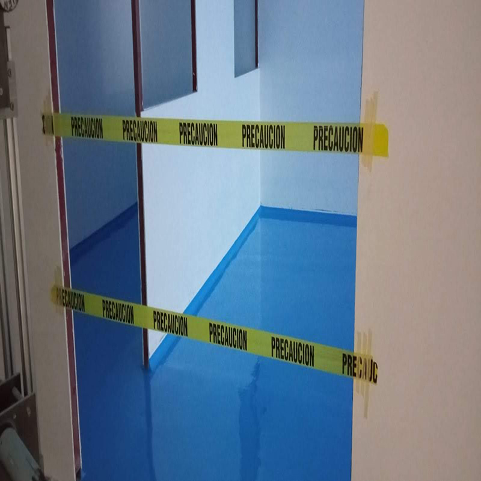
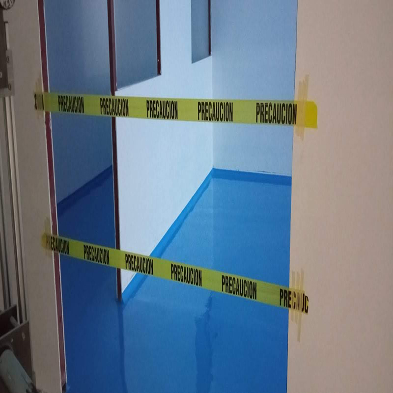

Nuestro servico

1Concreto Abrillantado
Pisos de Concreto Industrial, Comercial y Residencial. Con el Objetivo de Convertir una Superficie Áspera, Sucia y Sin Brillo en una más Lisa, Reflectiva, Segura y Fácil de Limpiar.
2Acabado Liso
fácil limpieza se recomienda en zonas estériles y de tráfico medio es aplicable en cualquier color, y en combinación con mortero epoxico se genera una mayor resistencia a la compresión.
3Lipieza Industrial
Zonas de imprentas, gasolineras, laboratorios hospitales, en la industria restaurantera y alimentaria. ofrecemos en general la aplicación de recubrimientos de pisos.
4Canchas Deportivas
Se colocará un sello epoxico, para eliminar imperfecciones y recibir sello epóxico. Según color.
5Area de Estacionamiento
Limpieza para la aplicación de praymer epóxico de dos componentes para tener una óptima adherenciaenel concreto.
6Durabilidad
Se caracteriza por su amplia gama de usos y acabados que se le pueden dar, como texturizado, antiderrapante, ultra resistente, etc. esto gracias a las resinas epóxicas que se emplean para su fabricación.
Galeria

 



Expertos